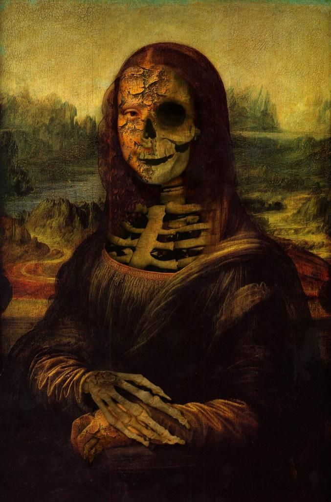
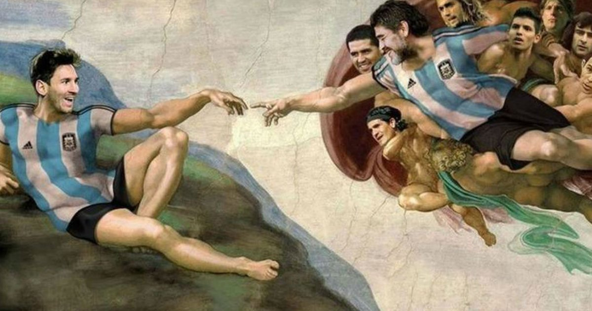
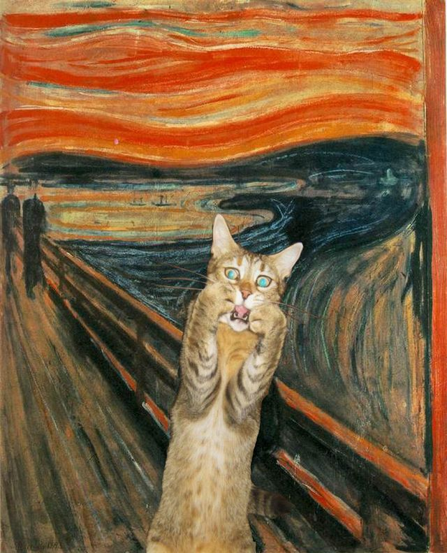
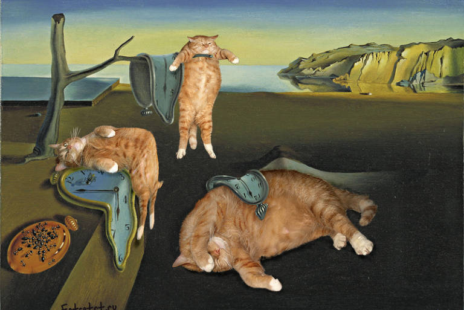
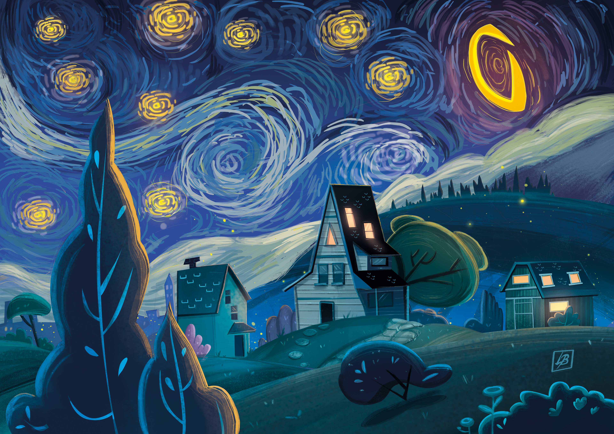
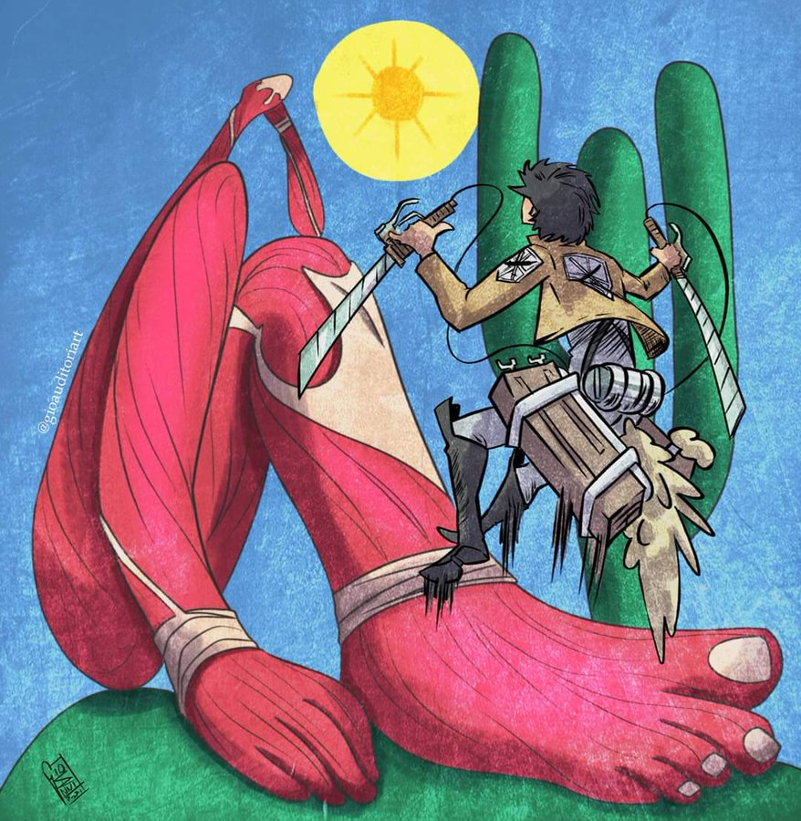

LEILO ART

Mona Lisa Obscura - Leonardo da Vinci
Mona Lisa também conhecida como A Gioconda ou ainda Mona Lisa del Giocondo é a mais notável e conhecida obra de Leonardo da Vinci, um dos mais eminentes homens do Renascimento italiano.
R$45000,00

A Recriação do Futebol
A Criação de Adão é um fresco de 280 cm x 570 cm, pintado por Michelangelo Buonarotti por volta de 1511, que fica no teto da Capela Sistina. A cena representa um episódio do Livro do Gênesis no qual Deus cria o primeiro homem a partir do pó da terra: Adão
R$62000,00

O Grito do Miau
O Grito é uma série de quatro pinturas do norueguês Edvard Munch, 1893. A obra representa uma figura andrógina num momento de profunda angústia e desespero. O plano de fundo é a doca do fiorde de Oslo ao pôr do sol.
R$950000,00

A Persistência da Memória Gateira
A Persistência da Memória é uma pintura do artista surrealista Salvador Dalí de 1931. A pintura está localizada na coleção do Museu de Arte Moderna de Nova Iorque desde 1934. É amplamente reconhecida e frequentemente referenciada na cultura popular.
R$86000,00

Noite estrelada em Curuja
A Noite Estrelada é uma pintura de Vincent van Gogh de 1889. A obra retrata a vista da janela de um quarto do hospício de Saint-Rémy-de-Provence, pouco antes do nascer do sol, com a adição de um vilarejo idealizado pelo artista.
R$75600,00

Abaporu em Game Of Thones
Abaporu é uma pintura a óleo da artista brasileira Tarsila do Amaral. É uma das principais obras do período antropofágico do movimento modernista no Brasil.
R$41000,00